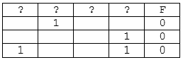

<div><table cellspacing="0" cellpadding="0" style="border-collapse:collapse"><tr><td style="width:480.2pt; padding-right:5.4pt; padding-left:5.4pt; vertical-align:top"><p style="margin:3pt; line-height:15pt"><span style="font-family:'Times New Roman'; font-size:14pt">(№</span><span style="font-family:'Times New Roman'; font-size:14pt">&#xa0;</span><span style="font-family:'Times New Roman'; font-size:14pt">6586) (Е. Джобс) Логическая функция F задаётся выражением ((</span><span style="font-family:'Times New Roman'; font-size:14pt">x</span><span style="font-family:'Times New Roman'; font-size:14pt"> </span><span style="font-family:'Cambria Math'; font-size:14pt">∨</span><span style="font-family:'Times New Roman'; font-size:14pt"> </span><span style="font-family:'Times New Roman'; font-size:14pt">y</span><span style="font-family:'Times New Roman'; font-size:14pt">) ≡ (</span><span style="font-family:'Times New Roman'; font-size:14pt">y</span><span style="font-family:'Times New Roman'; font-size:14pt"> → </span><span style="font-family:'Times New Roman'; font-size:14pt">z</span><span style="font-family:'Times New Roman'; font-size:14pt">)) </span><span style="font-family:'Cambria Math'; font-size:14pt">∨</span><span style="font-family:'Times New Roman'; font-size:14pt"> </span><span style="font-family:'Times New Roman'; font-size:14pt">w</span><span style="font-family:'Times New Roman'; font-size:14pt">. На рисунке приведён частично заполненный фрагмент таблицы истинности функции F, содержащий неповторяющиеся строки. Определите, какому столбцу таблицы истинности функции F соответствует каждая из переменных </span><span style="font-family:'Times New Roman'; font-size:14pt">x</span><span style="font-family:'Times New Roman'; font-size:14pt">, </span><span style="font-family:'Times New Roman'; font-size:14pt">y</span><span style="font-family:'Times New Roman'; font-size:14pt">, </span><span style="font-family:'Times New Roman'; font-size:14pt">z</span><span style="font-family:'Times New Roman'; font-size:14pt">, </span><span style="font-family:'Times New Roman'; font-size:14pt">w</span><span style="font-family:'Times New Roman'; font-size:14pt">.</span></p><p style="margin:3pt; line-height:15pt"><br /><span style="font-family:'Times New Roman'; font-size:14pt">В ответе напишите буквы </span><span style="font-family:'Times New Roman'; font-size:14pt">x</span><span style="font-family:'Times New Roman'; font-size:14pt">, </span><span style="font-family:'Times New Roman'; font-size:14pt">y</span><span style="font-family:'Times New Roman'; font-size:14pt">, </span><span style="font-family:'Times New Roman'; font-size:14pt">z</span><span style="font-family:'Times New Roman'; font-size:14pt">, </span><span style="font-family:'Times New Roman'; font-size:14pt">w</span><span style="font-family:'Times New Roman'; font-size:14pt"> в том порядке, в котором идут соответствующие им столбцы. Буквы в ответе пишите подряд, никаких разделителей между буквами ставить не нужно.</span></p></td></tr></table></div>